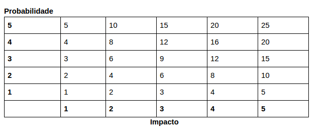

Plano de Gerenciamento de Riscos
Escopo
O plano de risco tem como objetivo descrever quais são os riscos do projeto, como eles serão monitorados e controlados ao longo das sprints, visando entender seus impactos, procurando formas de mitigar esses possíveis riscos.
Riscos e suas consequências
Riscos de projeto
| Id | Risco | Consequência | Probabilidade | Impacto | Risco |
| 1 | Desistência de membros | Sobrecarga dos membros remanescentes, distribuição de tarefas | 2 | 4 | 8 |
| 2 | Mudança arquitetural | Gera retrabalho, como alteração nas tarefas planejadas, mudanças estruturais e mudanças a nível de código. | 2 | 5 | 10 |
| 3 | Falha na comunicação | Erros e até perdas de informação | 5 | 5 | 25 |
| 4 | Mudança de escopo | Alteração no cronograma e redefinição dos requisitos | 3 | 5 | 15 |
| 5 | Descomprometimento da equipe | Falhas na entrega, desgaste nos membros comprometidos | 5 | 5 | 25 |
| 6 | Erro de priorização | Estimativa de produtividade e refatoração | 3 | 4 | 12 |
| 7 | Imaturidade na gerência | Diminui qualidade das entregas, aumenta o custo do projeto, afeta o planejamento, entre outros | 3 | 5 | 15 |
| 8 | Planejamento falho* | Alteração do cronograma, falhas na entrega | 3 | 5 | 15 |
Riscos técnicos
| ID | Risco | Consequência | Probabilidade | Impacto | Risco |
| 9 | Dificuldade com as tecnologias adotadas | Prazo e qualidade de entrega, priorização de requisitos, planejamento, entre outros. | 5 | 4 | 20 |
| 10 | Integração entre áreas | Produto não atender as necessidades do cliente | 4 | 5 | 20 |
| 11 | Atraso nas entregas | Planejamento e prazo | 4 | 4 | 16 |
Riscos externos
| ID | Risco | Consequência | Probabilidade | Impacto | Risco |
| 12 | Greve na UnB | Viabilidade do projeto | 1 | 1 | 1 |
| 13 | Covid-19 | Falta de algum membro. Falta de maior contato entre o time pelo distanciamento | 3 | 4 | 12 |
| 14 | Política Pública | Alteração na política existente pode prejudicar a execução do projeto | 1 | 3 | 3 |
Risco de produto
| ID | Risco | Consequência | Probabilidade | Impacto | Risco |
| 15 | Produto não atender aos objetivos | O problema levantado não ser solucionado. | 2 | 5 | 10 |
| 16 | Instalação do Painel Fotovoltaico em área de sombreamento | Diminuir a geração de energia que abastece o sistema | 3 |
Análise Qualitativa e Quantitativa dos Dados
A análise qualitativa e quantitativa dos riscos do projeto é feita a partir da probabilidade de ocorrência, do impacto gerado e a partir desses dois valores a análise do grau de risco. As tabelas a seguir mostram como esses valores são definidos.
Probabilidade
| Probabilidade | % de certeza | Peso |
| Nula | 0% | 0 |
| Muito baixa | 0 a 20% | 1 |
| Baixa | 20 a 40% | 2 |
| Média | 40 a 60% | 3 |
| Alta | 60 a 80% | 4 |
| Muito alta | 80 a 100% | 5 |
Impacto
| Impacto | Impacto sobre o Custo Original (%) | Peso |
| Nulo | 0% | 0 |
| Muito Baixo | 1 a 5% | 1 |
| Baixo | 5 a 10% | 2 |
| Médio | 10 a 15% | 3 |
| Alto | 15 a 20% | 4 |
| Muito alto | Acima de 20% |
O grau de risco é definido pela multiplicação da probabilidade pelo impacto. Conforme tabela abaixo.

Sendo que: - Risco >= 15: elevado - 5 < Risco < 15: médio - Risco =< 5: baixo
Análise dos Riscos
| ID | Descrição | Probabilidade | Impacto | Risco |
| 3 | Falha na comunicação | 5 | 5 | 25 |
| 5 | Descomprometimento da equipe | 5 | 5 | 25 |
| 9 | Dificuldade com as tecnologias adotadas | 5 | 4 | 20 |
| 10 | Integração entre áreas | 4 | 5 | 20 |
| 11 | Atraso nas entregas | 4 | 4 | 16 |
| 4 | Mudança de escopo | 3 | 5 | 15 |
| 7 | Imaturidade na gerência | 3 | 5 | 15 |
| 8 | Planejamento falho* | 3 | 5 | 15 |
| 6 | Erro de priorização | 3 | 4 | 12 |
| 13 | Covid-19 | 3 | 4 | 12 |
| 2 | Mudança arquitetural | 2 | 5 | 10 |
| 15 | Produto não atender aos objetivos | 2 | 5 | 10 |
| 1 | Desistência de membros | 2 | 4 | 8 |
| 14 | Política Pública | 1 | 3 | 3 |
| 12 | Greve na UnB | 1 | 1 | 1 |
| 16 | Instalação do Painel Fotovoltaico em área de sombreamento |
Planejamento de Respostas aos Riscos
| ID | Descrição | Risco | Ação | Descrição da Ação | Responsável |
| 1 | Desistência de membros | 8 | Aceitar | Realocação de Tarefas | Diretores |
| 2 | Mudança arquitetural | 10 | Mitigar | Pensamento crítico a respeito da arquitetura e procurando professores e outros suportes para a construção Arquiteta de Software | |
| 3 | Falha na comunicação | 25 | Prevenir | Realizando sempre todos os rituais e incentivando a comunicação por issue | Diretores e Gerente geral |
| 4 | Mudança de escopo | 15 | Prevenir | Validando constantemente com os stakeholders | Diretores e Gerente geral |
| 5 | Descomprometimento da equipe | 25 | Prevenir | Mostrar o propósito de suas ações, trazendo a sensação de responsabilidade. | Equipe geral |
| 6 | Erro de priorização | 12 | Prevenir | Utilizando técnicas de priorização e estar constantemente reavaliando a priorização | Diretores |
| 7 | Imaturidade na gerência | 15 | Mitigar | Mantendo o pensamento crítico e estratégico a respeito das métricas coletadas e realizando todos os rituais. | Manter o alinhamento. |
| 8 | Planejamento falho* | 15 | Prevenir | Validar constantemente o planejamento, focando sempre em entregar valor. | Gerente geral e diretores |
| 9 | Dificuldade com as tecnologias adotadas | 20 | Mitigar | Promover treinamentos e fornecer suporte para dúvidas e dificuldades. Manter o canal de comunicação aberto. | Diretores |
| 10 | Integração entre áreas | 20 | Mitigar | Manter as informações sempre alinhadas fazendo uso da boa comunicação. | Gerente geral |
| 11 | Atraso nas entregas | 16 | Prevenir | Realizando os rituais e observando ao longo da sprint a necessidade de intervenção dos diretores. | Equipe toda |
| 12 | Greve na UnB | 1 | Aceitar | Reavaliar o planejamento do projeto | Diretores e Gerente geral |
| 13 | Covid-19 | 12 | Aceitar | Distribuição de tarefas e reavaliar o planejamento do projeto | Diretores e Gerente geral |
| 14 | Política Pública | 3 | Aceitar | ||
| 15 | Produto não atender aos objetivos | 10 | Prevenir | Fazendo uma pesquisa de mercado e avaliando se a solução atende ao problema | Diretores e Gerente geral |
| 16 | Instalação do Painel Fotovoltaico em área de sombreamento |